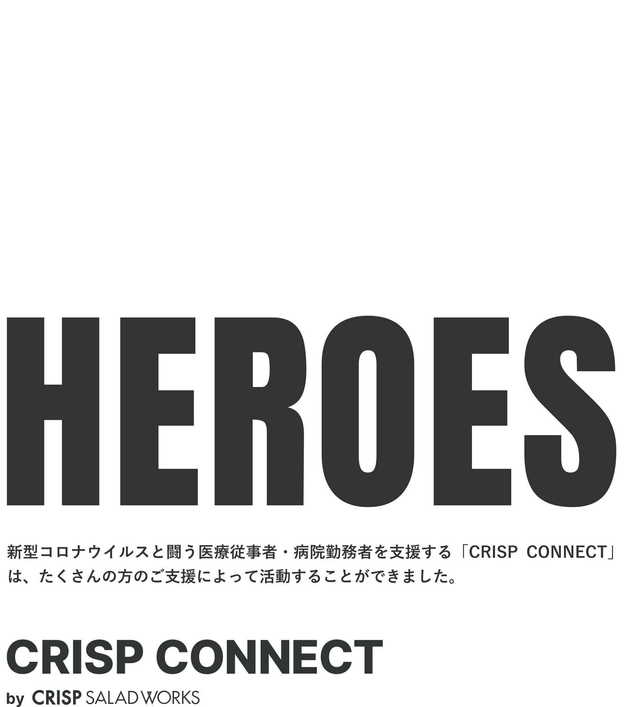
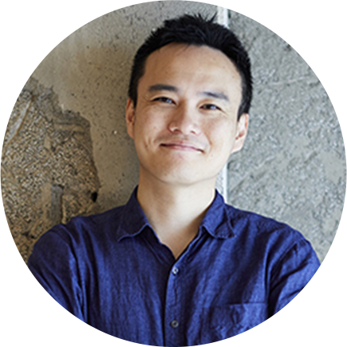

- 提供したサラダ
- 25,889個
- 寄附金の合計
- 20,403,310円
- 支援した病院
- 37箇所

[CRISP CONNECT]
25,889回分のみんなの想いを
届けることが出来ました。
2020年3月25日に始まった新型コロナウイルスと闘う医療従事者・病院関係者へサラダを無償提供する「CRISP CONNECT」の活動ですが、初日の3月25日の提供数は「113食」でした。
店頭でもたくさんの医療従事者の方から感謝の言葉をいただき、初日の夜には100人以上の方を笑顔にできたことを「こんなにたくさんの方に喜んでもらえた！」と、本当に嬉しかったのを覚えています。
それからわずか3ヶ月で2,000名以上から2000万円以上の支援、そして400名近くのボランティアサポーターグループによって、37の医療機関に「25,889食」ものサラダ(と一部ピザ)を提供することができるとは3ヶ月前は全く想像してもいませんでしたが、初日に113食提供した時にお互いが感じたあの心が温まるような優しい気持ちを、この数ヶ月で何千人もの前線で闘う医療関係者の方、そして支援者・サポーターのみなさんに感じてもらうきっかけに私たちがなれたのであれば、本当に何よりも嬉しいです。
CRISP CONNECTの活動を可能にしてくれたパートナー、サポーター、そして支援者のみなさん、本当にありがとうございました。
今後も私たちにできる範囲で、一歩ずつ前進しながら、みなさんに愛してもらえる良い会社にしていけるよう頑張っていきたいと思っていますので、これからもどうぞよろしくお願いします。
Satoshi KoyamaAkiko KoyamaくっしーChie OnumaKiyotaka Suzukisyossan27Yuichi UmeiRyuji UenoEiichi IshimaruMasahiro IkedaYoshikazu HiroseKazue WakatsukiTakeshi-FNoriyasu SatoMasato YamadaYUMI AKITAchie yoshiMasakoタブNorihiko FujimoriHisashi TsurutaHitoshi TakedaFMAKIKO TAKAGIMiwako KobayashiTaihei Kobayashi (Sun*)Toshinori SugitaMariko I kedaTOMOKO KOSUGE Hana OyamaJunko NoguchiMWCHIAKI INUIMarieYu ItoやまあきShugo NakataniUkokoShizuko OtaniJun KuriharaMieko TsuyukiHARUNA NAKANO50sup yoga&therapySHO OTANIOsamu ShinoharamakisaeMizuno SakiMichiyo SekineAya OkadaRumi SuzukiSeiko YamaguchiYoko蓮田 健一MNYuko ImafukuKozoLightningJiroSoichiro MotohashiYukiko Ookusahiromi mitsuzonoHikaru MiyamuraMasako NishidaMari KawanishiK TakeuchiAtsuko Manabe弓戸幸人yuko onishiKOTIYAMARaoya TanakaHiroshi MatsumotoAyame SanamiMay.AKOICHI MATSUBARAReyna SayamaYOSHIKAWA YASUKOYuko SatoYuichiro OkadaMasanori IshidaTAKAKOK.SaitoYosemiteYu NakamuraShiho SaitoHiroshi TATSUGUCHIHiro KarasawaAya Cookie匿名ウタマロmcnaiMiyu KokawaMizuho FujiiMIYUKI SUGIHARA(有)ケイエム測量YUKARI FUKUSENMasatetsu MifuneAI TSUNESHIKAMichiko KN.KomatsuM.ERita Marks Co.,Ltd.kozoKatsumoto Goto
石井康子まりこMizuki InoueNaoko Sasaoshusan kanziruspiritualMasae SekineMASAHIKO TOMITAKAJunichi Tamura大東洋克YUMIMasayo ImaiMayumi AoumiRyo KowadaSeiya InoueMitsutada Shokudaikiriakiko.iかどりーあやちゃんTetsuya ChibaHiroko KawauchiはせろうRyuichi MaedaMariko Watanabesawada ayaka 増田直人シバわんSHINYA NOZAKIＴ－ｓａｉｔMiho ShimaNoritaka KIMURANeco村さんEri TanakaTOMOKO HOSOKAWAMasako Kiyanozomi☆rianSakura MimozaToshiaki JokuraNAOKI BABAakoBABA FamilyMegumi KikawadaIchizo KawaokaJyonjyoroHIROO KAWAMTOMasako TanakaA-NagaEmiko S.H.Youichi FujiwaraKato IkukoくまやんNORIKOToshiko TakahashijellyfishMaruta JunkoAyako MiyamotoChisato ImamichiM.SAITOYASUDA YOSUKESaikoSundai1994NASU HAHAHideo ShitayaKANAKO KOGUSHIyuki mineKei AkaoRie Hosakakyoko5a7Chieko Inaba増田菜美TMHOHTA WATANABEMineko KashimuraEiki NishikawaITOLurieKiriko OhnishiTOSHIMI TAMAKIkasumintRie MaruokaT. KuramitsuMomoko YamadaMush0303Such KomoKumi tomitaKeisuke SaitoYumiko Kamomisato watanabeTomonari AbegossyOkutsu EriReiko TanabeToshiaki TanabeMami Iwaiホワイト03shigeki amanoMamiko IkedaYukie Tonuma and friendsSam AAYAKO.MSachiko Yokotayasuko ozekiGakuFumiki KiyosawaJURIがーぐーけんYoshiko KayanoRYOKO YATABETakeshi SugawaraAYAKA SAWADAyoshiko tsujimotoShiori UenoYUKIE SATOUmikoKenichi TakahataShibata Natsuhoエコ・コンシャス・ジャパンTetsuya HyodoAzabu GirlMiyama1Minako SugieTeaTOMIKO KAWAMOTOHiroyuki Murakamifujisita mitikoyuky deguAyako Yasuma中野由美子YukOyaminaYYoko.FLenashinobuMAO YAMASHITAMacha Matsushimakaku支援NORIKO KAWAMURAKohbekkoKaiおきちゃんwassamchizuru onoTOMOYA FUJINE藤目ハナricorico lemonアトム28TOMOKO NAKAJIMATOMOKO MAYANAGIYUKI AOYAMAMasahiro WakabayashiYASUTOSHI HOSHINOかずくんYoshio HidakaSchweetheartShinji MikiEisuke OhgiharaKazuko TsurugaiMegumiEmiko AsadaTomoko MiuraChieko InabaGrandmaYoko OgawaS.SAITO梶田美惠maymay
Kei Nakayama Hiromi NakayamaNOZOひらめさんもっちー飯室真紀子吉田隼人ランスロット25MIZU.T YURIAtsuko FukuiAyumiKana KawabataKotaro SetoMIHO KONDOAsako OnozawaMasayuki OkayamaFuruyama AkaneasakoYOKOAYAKYohei TanakaHitomi KTaiga Uekusaきららhiroyuki endoMinami Mizoguchi田中直樹AyakoMayumi WatanabeTomoko KoikeKaori IshikawaChiekoYukie TonumaNami TakaoYOUKO NAKAMURAmarcoMasatoshi ShibuyaRoco AsoKiyo Isoスマシガオ北島光寛KatsuKie TanakaYoko HoriguchiMITSURU INOMATAmomo77MAMI MOCHIDAToshifumi Suzukivigwigさとう やよい柴田英夫esakakuriAko FujiiAkiko KimuraYASUTOSHIMiho NojimaFUMIO MATSUSHITAsurge keijinkaiMidori Hirose yukaco.shimasakiKyoko NumotoSally Ozakihhori5150Satomi Suzukia.watanabenagatamaAcky SatoあちこりVerity H.TAKUYA OKADAMia FujiiM.IwabuchiYayoi WakitasarouReiko ShinozakiAkiko TakebeTakuro MoriAkibumi OsadaSumie UekiAsami浜崎大輔yoko naitoDaigo SasaharaDaisukehiguchiChiaki NakabayashiKei KatoHiromi.Makiko sakaiYumiko SasakiしんぼみつよしYuko UedaMidori HoshidaHideki SatoEmika UchinamiChieko InabaTAKUYasuko kaitoKazuyuki Numasatonakashima hirokazuMikikoHARUMIKarin YamamotoAI UCHIYAMAMiyuki Katsutaasuka ishikawaKEN SUGIMOTOメイプルマニアMayumi NegawaNobuya FuruiDaisuke SuzukiR. FushimiYumiko KawabataFumika KawamuraYusuke TakayanagiYuki IzawaSanae.WRYOKO YATABERie SawayanagiATSUSHI KIMURATomoko Yamanashinayutikaatsushi sasakiTAKAKU IMAMURAYurie ShimadaYukiko Onoderahisako oooY.KURATAMIWAKO TAKADAKazue Hagiwarayumi miyawakiNatsuko FukagawaayakoピロコMaiko MoritaTakashi OsakiMikako ShiohataさひこNobuyuki MitsumotoたかざとYoko FunasakiMari FushomozMitsuko HamaNao OsakoYUKI SHIRATOMayumi NakamuraKawamuratakamimizue.sSetsu TakeyasuManami SatoYUKA ASAKURA山内滋晴Nana FujiokaSatoshi ShimozakiMKFumikoYUKARI DoYuko BMDChihiro KuboshimaNaoko KikkawayasufumiYURIA OHMORIKazuki InoueMIHO MATSUMOTOAyako SugimotoYukkkiTomona HaradaTadashi GotoYuiko FujikawaYasuko TomidokoroKazuhiro TsujimotoyumiNaomi.yoshiokaAyako KidoミゾグチSAYAKA MURAIコダマヤスユキモカ母弓戸幸人Chihiro ShimomuraWelnekomayuka AOYAMAYuri ShikanoKouki DeguchiMasumi AkiyamaT.TerabayashiTsuneTKYuki KawaharaYuichi.O山本松美Soichiro Hiratakaorumi2020toniokaKEIKO KITAMOTOyuko uchiyamaErichiho shirouzuyayoi yoshidawakato yamadaYuhki YYoshino HazekiKazusa TakebayashiAco MiyauraSUMIKO MIYAMURATOMOKO KISHIAsami Yabui新藤久・洋子hideaki maedaMasahiro SonoyamaSayaka Ishizakayoko usamiMiyae MochidukiminiFUMIE SUETSUGUChigusa.HCHIEKO OONUKIChie SakakibaraChizJunko NakashimaSATOMI SUZUKITsuyoshi Abemuseletmix..Ryoko NonakaChiharu TajimaYoshiko KakimotoEudyptes robustusyuka awanopueriAi ItoTaeko MatsumotoNORIKO SUZUKITatsumi MiyaguchiCien_SESHO OHTOMOYUKARI FUSADA板屋Mizuho Suzukifumiko shioharaAYA IMAIBUNAyako KitazumeAYUMI ONONAOMI MURATAYukiko UranoTomoko OgiwaraRisa TanakaHidenori SuzukiKeiko AbegotomaiT.N.Daisuke FujikawaAsako NabetaMegumi InomataTaro HiguchiMasayo DoiＭ Shimanesaijo misaKeiko TsudaKeiko OganeYUKA URATAoolong-tShinobu Matsumoto藤野明子nyoYoshiyuki FuruyaRIE KUDOYukiho NonakaRie YamasakiTomoko HaginoyaSachiko A.名前 UENISHI YUKAJummi MatsumotoYoshiko MoritayuyuhamiOGAWAFAMILYTamami KamadaVAVINほんま こうMayu toHiromi OkamuraSHIERI HIRAIWAKento Koyashiki松本一枝Tomoko N.IkueNakamuraIkueNakamuraちちバニラ風任せSHIBAKEN三輪優月Ayako MiyamotoCHIEKO OONUKIManami TakeiFujiko NobeRika Tanakahisako babaHiroyuki NakaneKumiko HosakaMaki ShimodaAki ChibaS IkegamiKatsuya Uchidahappy sugarHitomi-KやぎMotoi YoshinoCHIKA WADAMasaharu kobayashiwrytailriokokoのmk2Akemi OnoDAISUKE MIWAYASUHITO NAKAYATakashi KatakaiChikako MiyagiSayuri YanagisawaMIHO SUZUKISatoshi OSATO MIREIYumi MitsuiSuzuki EriRumiko MYuki UenoKAORUHIROSHI KOMORIMiho TakedaChieko Suyamamitsuyo sato村田好恵YukiKaori Shimizu山崎総一郎Makoto IsshikiSetsu NozawaKoji IwashiroSachiko WイサムYUKO HAGIAyumi KotaniIchiro SatoHROKO MITSUJIJunko Koyanoうさぎ好きSetsuko TomobeAyano NakataniK MuramatsuSAIKO SANAIじんちゃんriezoukoYoko TeruiAsahi KawabeyukikiAsako.Ssayaka nakamuraMIKA NAGANUMAAtsuko MaedaYuki THIRO Ufumiko abeKengo NogataAKI & COO OIZUMI市川吉恵THE KOKONOE 水谷
Kako HikitaKiko HikitaふくにゃんクリロナぶんちゃんオレンジリンゴOz Daimon TashiroAya KomatsuYoshimi Furusawa鈴木有美子Hisashi KawaseTaiki.SugaYusuke MochidaYu Takeuchinrzkkeオオカミ城のルポ姫タブToru IchinobeLily OikawaYoko Takeuchi匿名のくまNAO TYUKO OTOMOyuki oinumaToshiaki SasakiカメイタツオMasayuki HoriuchiMMYUKI KAWAMURAMasatoshi MORI勝見美帆Yoshitaka SugimotoMasakazu Takahashi正木貴大sofiahachiKazuhiro AdoAkitomo IsomichiNAMI ARAIMaki OmuraNatsuko KONOOmiMiwako AndoMiwa FuruoyayudiTakahiro WatanabeAnn MitsuShiho TsuchiyaSato*O紗瑛Aki KeramoffyMasayuki NaganoSHIHO KAWAKUCHIYoshikatsu HirayamaDaiki NojiriふうKAKEMURA JuntaMayuko KogaMIZchie amフライハイYoshie MorikawashuseikokoIkukoTomomi HoriuchiHiromi YanoMikiko Ueda熊野舞香C・TTAKUYA HIRANE綾Minae KobayashiA.YMizuki HashimotoKohei Sasakik.sakaeKASAI ToshiharuKT33CHIHIRO YAMADAひさあつ美道研究家HIROKO荒井良啓Takahiro WakuiAKI Ttoshiyuki kitoo-cyanMutsumiJUNCHIE FURUKAWAYASUKO SHIOKAWAOGAWAFumiaki YamanoiOshima MasamiR.TMMMamiko.TナミMisato IshizukimarukaJunko KojimaYUKI KAMIYAMAHayato Yoshida江戸川区からのサポーターmiyoko masunotwoShoko HiranoSaori watanabeAkiho Tsuchidatutty櫻田敏裕Takahiro WakuiChihiro GidoHiroko KagaちゃんぶりHARUKA.NコンビニHarashuYasuhiro IshikuraJUNICHIRO YATSUGIマーニャ LaLa AI ルイAYA TANAHASHIKyoko ArakiYurika MiyoshiAtsukoMayumi NaitoayakoYasuaki WatanabeさとあHanna KosekiMariko TakeiHitomi MaseMasaki Katatakenta yoshimuraYumiko MiyakeつばいだいすけhimawariSaki IchimiyaHIROMI YAMAZAKIHiromi KomaiRPRYUICHI SHIMAYAREIKO KOTONOA.O.Junko miyamotoMiki Kosekiドクター SPkenkenKana Ohashi沼田 暁Miki MaejimaYUKIE MAEJIMAYHerikaKaiYuka YMika WatanabeMichiyo UekiSyuitiro Yamagutiyuko hasegawaFujii AkinaHaruka OshimaSadacoccoMasaru ObayashiKiyoshi OzawaAkiko ItahanaKanako Higuchiyurinひなこkawai tappeiSHIHO SUZUKIAYA ISHIDA葵井柳宇Saya TbrEmi KobayashiharukamasudaめめめMegumi HatsudaE.T.山本 恵Natsuki YoshikawaIkuko FujiiKousuke KimuraMari OsibaTakuya Masanobukenji komatsuDOKUONami HozukaTakahiro WakuiMasakazu Takahashi田山智子Hiromi Ishibashi瀧本 健太Nobuyuki Shimurahoumon ptみわJUNNA TONOSAKIKENJI SHINADAMasahiro SUZUKISaiko SawadayoukoKazuhiko HasegawaMika AzumaChizuru Hiraiminowa中井てつろうKenshiro Eharayukiko komine Tomoki TashimaTakumi TakahashiYoriko KigawaNoriko MatsumotoTakumi KezukaYohei IGUCHIHitomi K.かたふたYuuko KatsunoyudiTOMOKAZUTSUCHiYAJunko katoAyana HashiguchiMaho SaitoMichiko.T1978Nami TamadaMOTSUMITomohiro TabeHaruko Miyazaki松宮麻衣Akinori SatoHatsu.kumeHiroshi MamiyaERI KANEKOYokoMashimaHanako KitamuraRie MiyashitaKahana FurumotoSATOShogo TakedaTomoya IizukaAyako Moriokaたけの ぽめTakuto TsuchiyaNarushima familyあっちぃR.UMsatoshi MitsuishiTenma OzakiChie HoshiShinya KajigayaGOTO.TkazuMitsuhiro NagaseShigeyamaMiki Hirakiyukame yamazakiSachiko.KJunya TairamitokainaMasako OotakeMayumi NakamuraKOZUE NAKAMURAToshie kuwaharaChika Shimazuurara大堀悟Yumiko MiyakeみんごSena HayashiMasanori TanakaHonamiAmi MiyamotoMika MakiMasumi MaeokaYumi NagatomoNaoko HanaokaikuoooooAkira SakatokuosakakiyokoあまがえるSatokoERIKOyumi takizawaOdakam.m.あるまくTakayoshi Igihiromi konaiSumiko McbealYUKIKOMayumi Inuiariringo333333Yuuichi NakamuraMamiko IkedaHisato NakazawaMAYUMI TASHIMAYoshidaSaori K.yoshiaki suzukiEiji KawaMiki TanakaVA Tomoko TAKASHI KOJIMAYUKIKO ISHIDEmaikosu吉田君の母Kosei YoshidaくまちゃんみーちゃんMotoko MiyazakiあつこizuKANAKO KANDAERIKO SUZUKI麻生Yasuko InokuchiSayaka Fukushiｋasumi IwasakiYUMI SUZUKIMaki SakamotoHiroyuki OgawaシムラケイコYURINA SAITOUこめこめGAya Yasuda駿河TatsuroクボMatusatorisako nogami北村匡小林真唯子Chikako YamanakaHiroaki IchirikimilunlunハルmokamokagogoTakaaki hirutaS.Ywakuwaku_takashiSho TaniguchiAsami IkedaTOZAKIぱんちゃんHiroshi KawamuraJun FujimoriAbe yumikoAtsumi KawashimaAkiko SaitochikamitsoukoEmiko MitsuiMai EndoMidori HarazonoSATOKO IZUMIしょういちRyoko ManoYukohirorinYukiYASUHIRO TAKAHASHIFUJIEMotoo Suzukialum_chineせっちゃんE.YYUKI TATSUMIMichael&Akiko JohnsonYuta ArakiGoofyWAKANA MASUDAmiki hashimotoホリカワyoshiko katagiriskip0814Akifumi TakanashiShokoYumiTsukasa NakatamasahiraDAI REINoriko MitsumoriYUMIKOmannanmichel331YUKAKOAyano SakaidaYuji OkadaHiroko.YMichio YamazakiめーさんAkemi OidanbhtmrnShizuka AkimotoNaoko Kagawatakashi fukudaShiro YajimaNORIKAZU SAKAMOTONoriko (Vera)Haruka KatsumatayayakoChie TadaFumie Takeyamaemi yasudaSEIKO KURODAYANA CHIKojiＫＯＹＡ ＫＡＺＵＮＯＲＩ萌みっちゃん。Sara Aidatomoko haraerimrtk1008belldonnaKazunari Watanabetomoki yamasakiTakamasa Manabe@tokonoMariaAKIChiaki AndoNatsukoMegumi NakaguchiTakako Shimmachi冬悟Yukiko KawashimaSANAE KAMBEcue entertainmentAyaka YamamotoNaoko NiwaMiokyokomsspockKozue Oikehirokazu sakamotoNobody2020JUNKO KAYAMAえん安藤hamumayoCrispMichiko InokuchiRyotaro Kadowakimiposetsu,ayakyonkyonSHOTA MORIMOTOharaIkuno MorimotoYUMIKOSAORI徳江 有希子Yoshiko WatanabeIIDA EMINZTakako YamamotoCroco Phantasm ArtぴっぴYukari TagawaMaiko MatsumotoM TもちこtomapyonYuka HattoriASAライオKoto NakamurayoyokoMASAYO WADAyuko HorikoshiNORIKO NAKAHIRAJunko GodaYukari TomitaCHIKA KOMIYAMommyKAYO YAMAZAKIRyota KOYAMAyoshimi hasegawaDAISUKE MIWAYASUHITO NAKAYASetsu NozawaSachiko WHioTetsuya KurodaTomoko HASEGAWAEiko KamijoShiho Saito
KayatoKaemaripooShusukeasakoYukiJURONaoko MatsukokuririnnumaYUJIROJUNJIYuta AoiyokohUraraゆかぞうJane Doe with no thyroidMariekmnatsumiSTたにやんYukoたけenokhmachiK4H0R1KFShinji.WMayu YりかRyosuke YabukiYOSUKEAKIKHkuntakkえりかmkゆきこずえMarieY. MaruyamaYukkieKamana'oくれよんじんたんEriyuShunjiy23soccer7xxxx@umemacゆうすけふじどんさえこしんちゃんwakikolalaママおぐりんはるsmile@akky_hiro@Sourire60260253ゆうき ありかな@kumagorogorocookie146.7@dabobabicchochiakyuヨシコたかやん@tatsuyaoiwasaかわいいてつさとかずYoko S@miyaichi@saory_1994まるこむぎ@cat_1120SOUJimかぴ子おじさんmippo@go_shineバニキチHimiko@dome21jp@日本語誤変換リヨウタロウtommy35h_cocoみよひろ名乗る程ではございません@am3104たけゴッチKUSUKOはっちー@ri_mlsemiMIYA&YUmamaゆきりんサオリokamepenタケ@obakyu_no_kyuえりM.Skaokoべるあつこttk2bellbell@doragomilofkasemiaki野口眞由美あき＠zonokumiNango のカズこうじMayumi MiuraまわたりみかYumiこばたくこまこまくまくまnbhちえ@fujioi東健志郎supportOkabeckミント@mariko75だてなおとシーナseita＠keishi_brasilコテツシモカワアキラ大原中SASkokonutTakuyaMayumin@ゆーだいぶんToshi@Tetsuo MATSUIシマの母やすさんchanhidekinちゃーりー14mnらんししゃもりすKazuバハマの太陽KoichiroちゃたOkatechあざまmica.uYasuヒノフミとっしーMKiguanaかなIketchingよっちゃんルビコンどんちゃんんgreenMasayaChoroめぐakoMacoじゅんこキサラギジョン・ミッキーc.j.greg嶋津雄介ケンケングーグーがんもMoripyNoriponきたさんm-junkokawataken.nしゅんけいパパoz福岡諒祠（りゃんりゃん）ＫCorundumパクチーの妖精fullmoonjuncosatoshiままちゃんMich裕樹 団子屋ちびやまゆしばいぬキヨミよおこcyclesEikoひらうさぎのしっぽやすひろろんSHINshihoKaori SSATOKORikaRYOShii-Takeゆうやんアコケンぶん柏原 啓太satokoトモえいtomoまりMakokimyEMIのりうすどんのっちShuSashimiゆうこOZまーA匿名希望ドンぺいhana平林元之ちーかまゆきおS.MinamichiharuTerunobu Yoshikoshiたいすけとよ丸TakaLisa.oヤスマッキーマダムさやかいそらYoshimichikoめぐみRieケーイチかっちゃんnateなおさんmaysasukeさんごろうSYakira_tanakaまなumaiあゆリリーパキラTeppeiハゲじじいHaejin LeecoK4H0R1ユミeriotsmasaLilyさいりゅーチサトひろりんmako祐子白雪きのっぴーチョコyakkiもこ祐季子プルメリアかのんYukaウッドストック大好きおばさんJO中川顕太朗YayoimaruKumiko SaikiTarumiQooあめもMizYunSatoshi OTANIタコyuiMackied_kawakawaみーこmskアマビエになりたいkMAYUMAYUKWHHidemi HiraiYUMINtnknいやのっちYUMYuji Hiratsukaあおnori収束を祈る主婦への８Salmones Humboldt一同つちやあっちゃん美穂ShibaggioパブロBIRD lovermacaroniMIDORIr.r.まーこGOＹＹきのこC前田民彦みきMayu KitaるいるいkazuoMitchyキョエしんざんyukinohommekumaCOCOめぐみちゃまemixoxoあきこhibi yucchoはるかソラいうち ゆうこhizishime3代目JSaunnerKyokoはみKenyamaicoccoNaomiQ淳Nail room cherieTerryTomyukiにゃえK-miyaさいとーLeeママNKまんまるらんこ名古屋のやまちゃんfuturoimoimoPrincessMMNAあこぽんひでKeikoしまねっこ綾テグタンゆなtomomo江戸川からの応援者YumiｎｏｎりんSaho松NaoyaゆまみーnabeRaizoたまkyanみくnakoミーマーニッシーYFむぅnoriyokoKeitaシゲシゲPiyokunなおだいきょっち阪口貴行ぽきちTaekoとんとんくーまめちさとDmomoせりKentaro STakayukiRyomexPEARMAYUMAYUまりりん519りえみくりおこkeiko minagawaNYkokoroしゅじおキシガキYukiBUUYukariTottoNAMIk.minami對馬イリーナ利尻島から応援してます‼︎purin齋藤 良太HanabrannhalhalゆうきりんゆかりんSantiagoちるり日本語誤変換ちかちゃんayaぱちマリさちこはせのよめnabemumeiRYO KANDAwedgのりゆきTomoko KatoKodyユウゆーママishiiwataru ogawaモモコロスケhappiness野元満喜子mickioFJToshiNただみpyoshikopTomやよいMizYukoMikimHaruka Ishikawaゆみこやまだ ふみよローラnontenりとまりたねこままのすけmm6Junko.HまみちゃんMarikoDASUTanaka's familyモルさんmumeiMAYUMAYU�homiezまりけんYUKIまことミヤYUKINoriko Sugiuraなおこ川崎陽子ygummyukaエイコshotaroEiji麻衣子yukijm_sonosonoすーちゃまんKohei.YPraying...TAKASHItomtomUKA.OiたみこSAトモコ@inakichiともSeisonフクちゃん@Moto20171007Nobbyhimatsui415YukiakiらりりくまMikko森本祐司Kan長谷川優子おぱんchiechibb嶋木利哉TOTATK@neohawk@milkymuffin1YoshiAkikoしるばぁもんERINAあっぽんhigematsu1958ガイアの旅人harenohi28@R_seniorみつお@sugy3秀樹Takehiko.Chie酒井YokneeMu@Akiko3583ミミたんMihoyasuMayチョコパパHappy 2LilyいかりんぐクルトンThomas Tatsumi秋山ファミリーDAIJOムーミン&ミイ善助mamoruayaぷりんSachikototo01299c - KTstreethunter871ミュリエルsatGWM感謝の佐川きょうちゃんU尾崎こずえほしThomasChennai LeelanocchiのんちゃんぬますけMINORUじょせまるAyakoよしt.yamadaGigglesHenryhappyenjoyKoichi Yoshikawa小林理枝Ralphゆうグレースたかこ。普通の日本人Shimauma塩田歯科医院mugenMasatoMKAkoジジYukoH NOGUCHI湯浅みつこゆばちゃんHirokoYoko TEMIひばりAyumi園子おりおんくもしおりAki76yukikonoMIndeXnaomiまのん雪下岳彦H UEDApine719Yokoノエルきぬさんecliy2kmariDaniel & KanaみえMaiみえはるみやびのやまとAyaのりたまたにぐちTOMOMIHiro Ochiaiyuriko阿部恭子ChieふみこmaskmaskDaisyかっぱゆうき65歳のばあばS･NもるぼkumiponEMIhirocosanoるかYukimichiko@Nori@kkReikoume21大狸YosukeままさんRieoninoixQままひかるこQままマッチemiまことSHIORIIkuchanLupinTheKOKIスターサファイア丸山祐司MamikoKmoonひつじ１９６７CHIKARけんけんKanakoNaomother-earth5611たまツボーズアラレちゃんTomoyuki Nakagome功さんのハニーkozoひろりんrinotony匿名希望一市民A子TOMOOTkikutalauleaマハラジャ吉田hal_hal_uSalute&PaceKOUTA_Ug.O.R.i@fazball2Venmo@Kazupin5marielueMastotoはなおしのRunner.shinchanぴーすやすYuta Aoi医療現場の応援団fukushiw落花生t.masaki克己HiroシャチRisaAya Endohbqmnとみー養鶏農家藤田ひろしはるぼーnonaneしょんずたまなaiPabloMinoru Toyodaりなみささや萌子嶺まいすけひろこりさすーさんもえあやかだいきさちあさみみとさんさよちかここころリーナかすみあんりクレアゆりかかなえたまみYuri OgawaWenny YunitaAyumi Mine WilsonKenya Reeves-CostaRony JacquesJeff MacDonaldJen WhalenMichiel ThomasKahoru IijimaErica KungCaroline ParkKenneth HauptmanCraig HagedornLana RudymKo DashMonina VeranoChad KendallLiz NealonThorn LimYuhei OgawaShusaku NamikawaまるちゃんFumi K.Mayuko UranamikozoKatsumoto GotoSHIHOとしやTTやっちゃんパワーズ伊藤ミナ子アラムコ・アジア・ジャパン株式会社だんしゃくジボダンジャパン
お名前非公開のたくさんのunsung heroes
Hiroyuki.YMae.THiroyuki.ENao.KYoshiko.OShohei.OTakushi.MMiyako.TKenshiro.AAtsuko.IMichiko.CDaniel.BNahoko.TMasunobu.HYuito.GKaho.SMiyuki.SMika.UChihiro.KShoko.YShion.I
Keisuke.MYuki.YMasataka.Nさとみやってぃーmanato kiryuTurnayana kawabataerika kojimakikumi haratamaki hayashinana ozakikentaro yokoyamamimi yamadaRINkenshinHANAKATEIKAyuri nomooSHIORIUNAMasakiSawakoMarikoKimikaAeruUchimaruKPShinjiNatsumi.NShinakoRisaJuriYuiTatsukikanrenrengunchanhazuki koyamaYuki.SKirara.KHinako.N